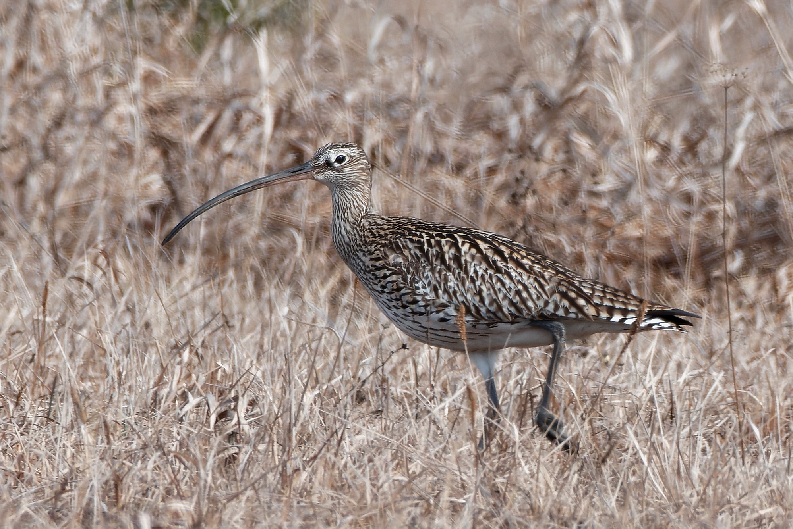

Numenius arquata — un grand limicole des rivages hivernaux
Nom et classification
Le Courlis cendré, Numenius arquata, appartient aux Scolopacidae, dans l’ordre des Charadriiformes. AviList 2026 conserve ce nom et le classe Quasi menacé à l’échelle mondiale. Les références arabes utilisent notamment les noms de « grand courlis d’eau » et de « courlis eurasiatique ». Les appellations populaires abrégées pouvant désigner différents oiseaux, le nom scientifique facilite la vérification des photographies et des archives. Il s’agit d’un grand limicole, et non d’un oiseau chanteur portant un nom populaire voisin.
Identification, âge et sexe
Son signe le plus évident est un long bec régulièrement recourbé vers le bas, associé à un plumage brun strié, un long cou et de longues pattes. Les sexes se ressemblent, mais le bec de la femelle est généralement plus long ; les chevauchements empêchent un sexage certain sur ce seul critère. Les jeunes peuvent avoir un bec plus court. Le Courlis corlieu, Numenius phaeopus, est généralement plus petit, avec un bec plus court et une tête davantage rayée, notamment une bande claire au centre de la calotte. Il faut comparer silhouette, tête et bec ensemble.
Entre vasières et prairies
Hors reproduction, il fréquente vasières intertidales, estuaires et côtes abritées, mais aussi des champs et prairies voisins. Il sonde la vase pour trouver vers, mollusques et crustacés, sans dédaigner les proies de surface. L’alimentation suit les marées ; des reposoirs sûrs deviennent indispensables quand l’eau recouvre les vasières. Une longue côte n’est donc pas forcément favorable : les remblais peuvent supprimer les secteurs nourriciers, et le dérangement répété prive les oiseaux de repos même si leur zone d’alimentation subsiste.
Reproduction et cycle de vie
La reproduction s’étend sur une grande partie de l’Eurasie, dans les prairies humides, marais et paysages ouverts. Le nid est au sol et les deux parents couvent. Les poussins quittent rapidement le nid, se déplacent et se nourrissent sous surveillance avant de voler ; un poussin au sol n’est donc pas forcément abandonné. Drainage et fauche précoce peuvent compromettre la reproduction. Ensuite, beaucoup gagnent des côtes plus chaudes. Certains individus non reproducteurs restent au sud en été, ce qui ne démontre pas une nidification locale.
Répartition arabe en automne et en hiver
Au Koweït, c’est un hivernant important et un migrateur de passage, avec quelques estivants sans reproduction impliquée. La base omanaise le donne abondant au passage et en hiver. Au Maroc, les suivis documentent l’utilisation hivernale des lagunes et estuaires, notamment Sidi Moussa–Oualidia ; l’hivernage est également documenté à Aden, au Yémen. Le contraste libanais est net : le guide de 2026 le considère accidentel sur le littoral. Début novembre concerne donc surtout les rivages favorables du Golfe et d’Afrique du Nord ; les effectifs actuels d’un site exigent un comptage récent.
Pourquoi le protéger ?
Son statut Quasi menacé souligne les risques liés à la disparition et à la dégradation des habitats, à la destruction directe, au dérangement et aux pressions sur les sites de reproduction. Vasières et reposoirs doivent être protégés ensemble. Des reculs répétés ou une alimentation interrompue imposent de s’éloigner. Poursuivre un groupe pour photographier son envol n’est pas responsable. La présence hivernale ne vaut pas autorisation de chasse : le droit dépend du pays et de la date.
Références
AviList Core Team — AviList v2026, 20 October 2026.
British Trust for Ornithology — BirdFacts: Curlew and Whimbrel.
RSPB — Curlew; Wash Wader Research Group — Curlew.
BirdLife International — Migratory bird of the month: Eurasian Curlew, July 2024; Aden Important Bird Area account.
Ramadan-Jaradi et al. — Updated checklist of the birds of Lebanon, Sandgrouse 42, 2020.
Kuwait Ornithological Rarities Committee — Kuwait Bird List; Kuwait Birds: Eurasian Curlew.
Birds of Oman — national species database.
Waders wintering in Morocco: national population estimates and trends, Wader Study Group Bulletin 96, 2001; Phenology of waders in the Sidi Moussa–Walidia coastal wetlands, 2009.
Ramadan-Jaradi & Itani — Birds of Lebanon: A Photographic Guide to 409 Species, second edition, UNDP, June 2026.
Photo : Лариса Артемьева — CC0-1.0.